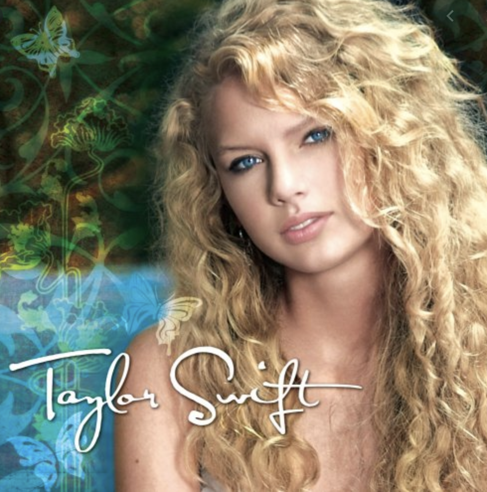
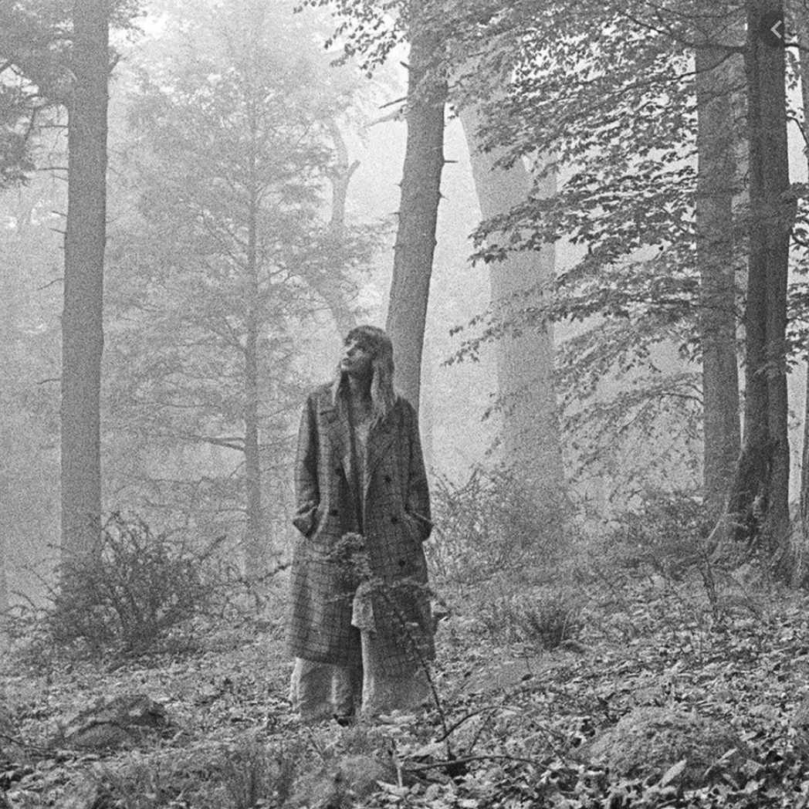
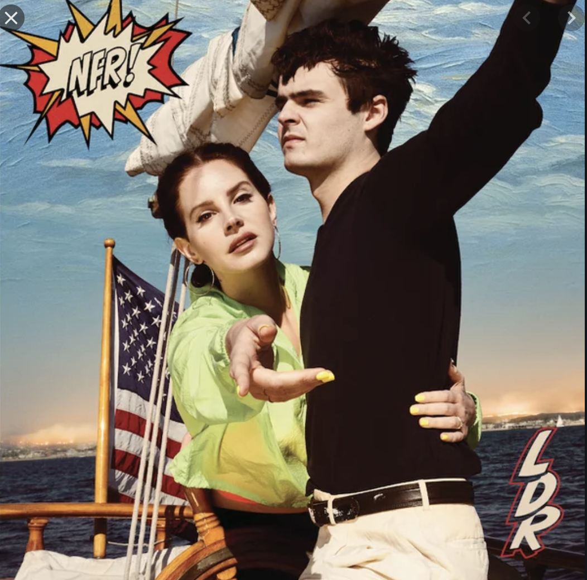

Listening to music
Growing up, I only got to see my father once a week because of his demanding work schedule. When I did see him, he was always doing yard work or fixing things outside, and always did so with this silver CD player sitting on the garage floor. That little CD player would play all of my dad's CDs, but would also play the station 101.5, WPDH radio, home of classic rock and roll in the Hudson Valley. It was here that I was exposed to what are considered to be "the classics," and really had a large effect on my music taste as I got to high school and got to play music in my own car. Music has always been a huge part of my life, and I have many happy memories (and not so happy) memories associated with so many different songs. It also may sound stupid, but I love that songs are literally just singing poems.
My relationship with music
I would say that I listen to a lot of alternative rock music, my modern answer to growing up surrounded by classic rock and Billy Joel. However, I also listen to a lot of Lana Del Ray. I think that this is because I have so much respect for her as a song writer, and all of her songs are beautifully written in my opinion. And finally, in my seemingly unpopular opinion, I am definitely one of the biggest Taylor Swift fans I know. This is partly a nostalgia thing for me, but I also have so much respect for her, both as a person and as an artist. I have such distinct memories of jumping on my bed as an elementary schooler to her song "Teardrops on my Car" and "Our Song," and I really feel like her music has grown as I have. It sounds corny, but her music has gotten me through a lot of things. There is a good chance her music is on at some point of my day.
  Fun fact: On March 12 this year, I got to go see Billie Eilish in concert, little did we know that it would be the last concert for almost a year!